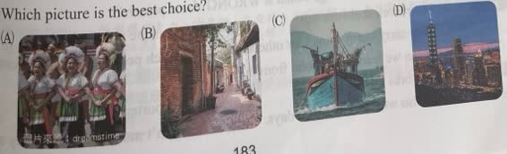
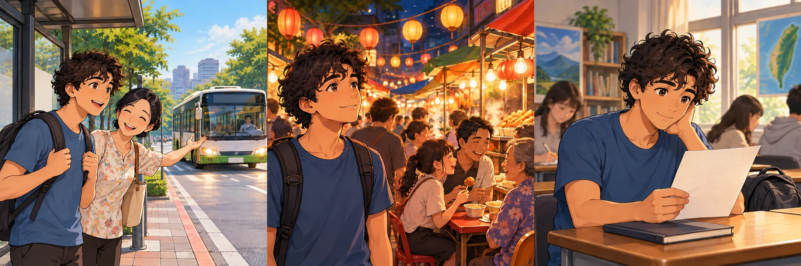
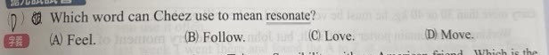
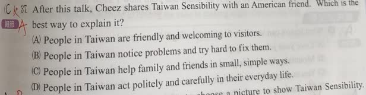
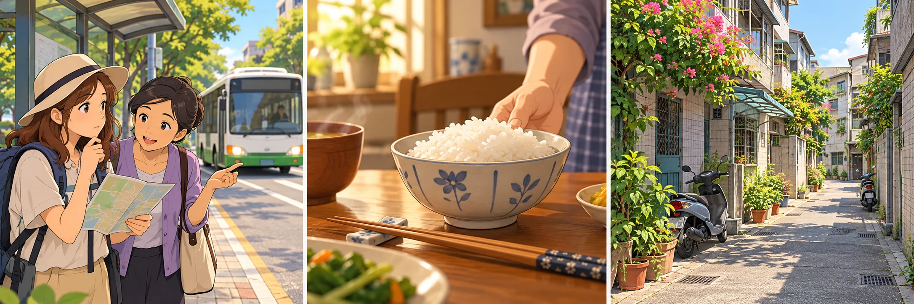
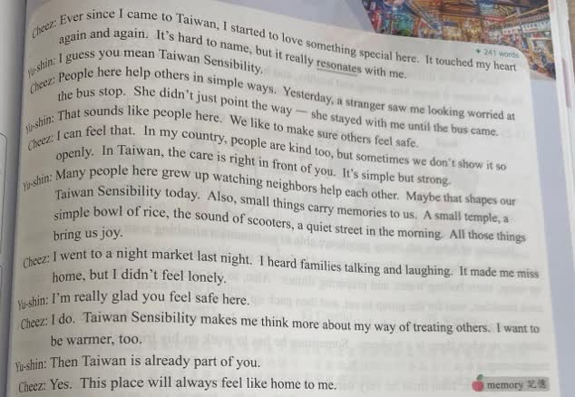
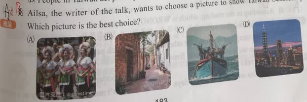

完整原題
作答所需文章／材料
【Taiwan Sensibility】 Cheez: Ever since I came to Taiwan, I started to love something special here. It touched my heart again and again. It’s hard to name, but it really resonates with me. Yu-shin: I guess you mean Taiwan Sensibility. Cheez: People here help others in simple ways. Yesterday, a stranger saw me looking worried at the bus stop. She didn’t just point the way — she stayed with me until the bus came. Yu-shin: That sounds like people here. We like to make sure others feel safe. Cheez: I can feel that. In my country, people are kind too, but sometimes we don’t show it so openly. In Taiwan, the care is right in front of you. It’s simple but strong. Yu-shin: Many people here grew up watching neighbors help each other. Maybe that shapes our Taiwan Sensibility today. Also, small things carry memories to us. A small temple, a simple bowl of rice, the sound of scooters, a quiet street in the morning. All those things bring us joy. Cheez: I went to a night market last night. I heard families talking and laughing. It made me miss home, but I didn’t feel lonely. Yu-shin: I’m really glad you feel safe here. Cheez: I do. Taiwan Sensibility makes me think more about my way of treating others. I want to be warmer, too. Yu-shin: Then Taiwan is already part of you. Cheez: Yes. This place will always feel like home to me. 【原題字詞註釋】memory：記憶。英文第36題｜resonate與move的情感字義
英文第37題｜台灣人情味與陌生人的關懷
英文第38題｜從日常意象選擇人情味圖片

先想一想，再查看答案、解說與原圖
英文第36題｜resonate與move的情感字義
分享原卷｜第36題 · 對話建立日期（Created） 2026-08-14 · 原AI對話 ↗
逐項解析
| 選項與原句 | 判讀 | 句意與判斷理由 |
|---|---|---|
| (A) Feel. | 不選 | feel指感覺、感受；本處要表達事情打動一個人的心，move更貼近。 |
| (B) Follow. | 不選 | follow指跟隨，與前文touched my heart的情緒意義不符。 |
| (C) Love. | 不選 | love指喜愛，不是此處讓人產生共鳴、受到觸動的動作。 |
| (D) Move. | 應選 | move可表示打動、使感動，與touched my heart及resonate呼應。 |
詳細說明與解題步驟
一、回到目標字前一句
Cheez先說It touched my heart again and again，表示那種特別的感受一次次觸動他的心。接著才說it really resonates with me，所以這裡不是物理上的共振聲響，而是引起共鳴、觸動心情。
二、選同樣能表達打動人的動詞
move除了移動，也有打動、使感動的意思，與此處的resonate最接近，故選D。resonates with me可用moves me表達相近意思；意思相近不表示原介系詞with也要照搬。
三、區別感受與使人感動
feel是感覺、感受，follow是跟隨，love是喜愛；本題強調那件事觸動Cheez的心，用move最能呼應前文。字義題要把選項放回情境比較，不能只背move的第一個中文意思「移動」。

① 先讀前句touched my heart
Cheez先說那種特別的感受一次次觸動他的心，接著才用resonates with me。因此這裡的resonate是情感上的共鳴，不是在講聲音或物理振動。
② move也能表示打動、使人感動
move除了移動，也能表示使人感動。夜市的家庭談笑讓Cheez想家卻不孤單，這類觸動心情的語境，與前句touched my heart呼應，D最貼近。
③ 意思相近，搭配不必照字硬換
resonates with me可用moves me表達相近意思，with不必照搬。feel是感受、follow是跟隨、love是喜愛；此處最要表達的是事情打動了人。
④ touched my heart提示情感，move不只表示移動
答案 D：Move.
- 前句touched my heart是直接情感線索。
- move可表示打動，不只表示移動。
- 以情境比較字義，並留意resonate與move的搭配不同。
核對註記：已依原卷或完整文字核對並獨立解題；對應教材課次未確認，歸綜合。
原圖（僅本題）


英文第37題｜台灣人情味與陌生人的關懷
分享原卷｜第37題 · 對話建立日期（Created） 2026-08-14 · 原AI對話 ↗
逐項解析
| 選項與原句 | 判讀 | 句意與判斷理由 |
|---|---|---|
| (A) People in Taiwan are friendly and welcoming to visitors. | 應選 | 陌生人陪Cheez等車，讓外來者感到安全、像在家，呼應對訪客友善與歡迎。 |
| (B) People in Taiwan notice problems and try hard to fix them. | 不選 | 文中重點是人與人之間的溫暖關懷，並非發現問題後努力修理或解決的概括。 |
| (C) People in Taiwan help family and friends in small, simple ways. | 不選 | 小事與幫助雖相關，但family and friends限縮對象，未涵蓋陌生人對Cheez的關心。 |
| (D) People in Taiwan act politely and carefully in their everyday life. | 不選 | 禮貌與謹慎不等於本文所說的溫暖照顧與歸屬感，缺少主要證據。 |
詳細說明與解題步驟
一、先看文章用哪個事件解釋人情味
Cheez在公車站顯得擔心，一位陌生人不只指路，還一直陪他等到公車到站。Yu-shin說大家希望別人感到安全，後來Cheez也說台灣會像家一樣。
二、用能涵蓋主要例子的選項
A所說對訪客友善、熱情，符合外來者Cheez受到陌生人照顧的情節，故選A。
三、提到相近詞語不代表範圍就正確
C雖提到日常小事，卻把受幫助的人限縮成family and friends，漏掉文中最直接的stranger例子。B的發現問題並努力解決、D的禮貌與謹慎，都不是對話所著重的溫暖關心。主旨題須兼顧行為與對象，不只比對單一字詞。
① 幫助Cheez的，是一位stranger
Cheez在公車站顯得擔心，一位陌生女子主動關心、指路。stranger是陌生人，這個例子中的關懷對象並不只是家人或朋友，主旨也要包含訪客受到的照顧。
② 不只指路，還陪等到公車到站
She stayed with me until the bus came.說明對方一直陪他等車，讓他感到安心。這不只是禮貌地說一句話，而是文中具體呈現的溫暖關懷與陪伴。
③ 想家卻不孤單，呼應welcoming to visitors
Cheez也提到夜市的家庭笑語，讓他想家卻不覺得孤單，最後說台灣像家。A的友善、歡迎訪客最能涵蓋這些感受；C只寫到親友，沒有涵蓋陌生人照顧訪客的主要例子。
④ 陌生人的陪伴，讓訪客感到安心與歡迎
答案 A：對訪客友善、熱情歡迎
- 對象：陌生人關心外來的Cheez。
- 行為：不只指路，還陪等到公車到站。
- 主旨須涵蓋陌生人與訪客，不只擷取親友、小事等局部字詞。
核對註記：已依原卷或完整文字核對並獨立解題；對應教材課次未確認，歸綜合。
原圖（僅本題）


英文第38題｜從日常意象選擇人情味圖片
分享原卷｜第38題 · 對話建立日期（Created） 2026-08-14 · 原AI對話 ↗
逐項解析
| 選項與原句 | 判讀 | 句意與判斷理由 |
|---|---|---|
| (A) 圖A | 不選 | 傳統服飾的人群具有文化意象，但對話沒有以此活動說明人情味。 |
| (B) 圖B | 應選 | 巷弄街景呼應文中的quiet street及日常事物承載回憶。 |
| (C) 圖C | 不選 | 漁船不是對話列舉的小廟、飯、機車聲或安靜街道。 |
| (D) 圖D | 不選 | 地標夜景未在本文的具體意象中；知名度不能替代文章證據。 |
詳細說明與解題步驟
一、找文章中能與畫面比對的具體事物
Yu-shin提到small things carry memories to us，接著列出小廟、一碗飯、機車聲、清晨安靜的街道。這些日常景物帶來快樂與熟悉感。
二、逐張圖與原文對照
B呈現巷弄街景，最接近文中的quiet street以及日常生活的意象，因此選B。A是穿著傳統服飾的人群，C是漁船，D是都會地標夜景；這些也可能與台灣有關，但不是這段對話用來說明人情味的具體畫面。
三、選文章支持的最佳圖片
題目不是問哪張最有名或最能代表所有台灣文化。要把圖片與本篇文章的描寫對上，不能單憑自己認識的文化特色決定。B的優勢是日常街景與文意呼應，不必憑照片猜定拍攝時刻。

① 陪等公車，先讀出簡單的關心
陌生人不只指路，還陪Cheez等到公車來。這段對話用日常小事表達關心，不是在比較哪一國的人一定比較友善。
② 小事承載回憶，是選圖線索
Yu-shin列出小廟、一碗飯、機車聲與安靜街道，說這些小事帶來快樂與熟悉感。要找本文點出的生活意象，不只找著名地標。
③ B巷弄街景最接近quiet street
四圖中B的巷弄街景最呼應日常街道。A傳統服飾、C漁船、D地標夜景也可能與臺灣有關，但不是本文的最佳對應；不用猜B的拍攝時刻。
④ 圖片要對上本文的日常意象
答案 B：巷弄街景
- quiet street與日常事物承載回憶，是直接線索。
- 選本文最支持的圖片，不是最有名的景點。
- 其他畫面也能有文化意義，不等於本篇最佳答案。
核對註記：已依原卷或完整文字核對並獨立解題；對應教材課次未確認，歸綜合。
原圖（僅本題）

